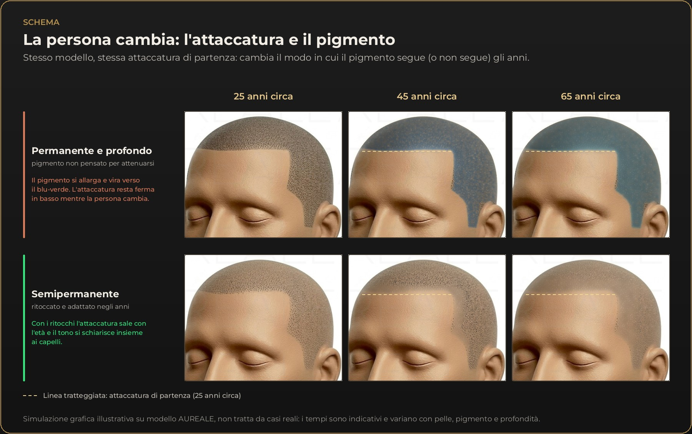

Journal
Di Simona Reale
Chi cerca informazioni sulla tricopigmentazione, chiamata anche micropigmentazione dei capelli, SMP (Scalp Micropigmentation) o tatuaggio del cuoio capelluto, trova due promesse opposte: un risultato permanente, che resta per sempre, e un risultato semipermanente, che si attenua e si ritocca. Sembra una questione di marketing, ma dietro c’è una differenza reale: che cosa si deposita nella pelle, a che profondità e che cosa succede, anno dopo anno, a quel pigmento.
Questo articolo mette ordine, con le fonti disponibili e con onestà sui limiti. Il mio punto di vista è chiaro fin dall’inizio: la tricopigmentazione deve poter cambiare con la persona. Le parti basate su studi sono indicate dalle note; quelle che nascono dalla mia esperienza professionale sono segnalate come tali.
In breve
Le due parole descrivono in realtà due scelte progettuali, che si combinano: il pigmento e la profondità. Il tatuaggio artistico cerca la massima permanenza: usa pigmenti molto stabili, come il carbon black e i pigmenti inorganici, e li deposita più in profondità. Nella tricopigmentazione e nel trucco permanente moderno l’obiettivo è diverso: ottenere un risultato prevedibile nel tempo, con pigmenti formulati per degradarsi in modo graduale e progressivo. Ne parla più a lungo l’articolo su biologia del pigmento e fagocitosi.
“Permanente” non vuol dire “che resta uguale”. Vuol dire che il pigmento rimane nella pelle, e la pelle continua a vivere: il pigmento si sposta, si disperde, cambia aspetto. Anche la letteratura specialistica distingue i due approcci: un capitolo del trattato Hair Transplantation (Thieme, 2023) descrive la tricopigmentazione “temporanea” come una tecnica distinta dalla SMP permanente, nata per risolvere i problemi delle tecniche permanenti precedenti.[1] Non è una questione di bravura o di scuola: sono scelte di progetto, con conseguenze diverse nel tempo.

Va detto anche che “permanente” è spesso una parola usata in senso commerciale: non esiste una definizione unica e condivisa, e due trattamenti chiamati allo stesso modo possono usare pigmenti e profondità molto diversi. Per questo, più dell’etichetta, contano il pigmento usato, la profondità di lavoro e il modo in cui il lavoro è pensato per cambiare nel tempo.
Il pigmento depositato nel derma viene catturato dai macrofagi, cellule che ripuliscono i tessuti. Per molto tempo si è pensato che un tatuaggio restasse stabile perché queste cellule vivono a lungo. Uno studio condotto sul topo (Baranska e colleghi, Journal of Experimental Medicine, 2018) ha mostrato che non è così: quando un macrofago muore, il pigmento viene rilasciato e ricatturato da nuovi macrofagi, in un ciclo continuo di cattura, rilascio e ricattura. La persistenza nel tempo sembra dipendere più dal ricambio continuo di queste cellule che dalla loro durata.[2] È anche il motivo per cui il pigmento è così difficile da eliminare.
Il pigmento, inoltre, non resta del tutto dov’è. Uno studio del 2017 (Schreiver e colleghi, Scientific Reports) ha analizzato la pelle tatuata e i linfonodi vicini di quattro persone decedute. In due di loro, particelle dello stesso pigmento sono state trovate sia nella pelle sia nei linfonodi: nella pelle erano presenti particelle fino a diversi micrometri, nei linfonodi soltanto quelle più piccole, sotto i 200 nanometri.[3] Con il passare degli anni, ricordano Olszewska e colleghi, le particelle possono spostarsi gradualmente verso gli strati più profondi del derma, e il tatuaggio appare così più sfumato e sfocato.[4] Una revisione del 2024 riporta che in tatuaggi di oltre quarant’anni le particelle restano nel derma profondo e nei linfonodi locali.[5]
Il quadro che ne esce è semplice: il pigmento non è fermo. La domanda utile, allora, non è “quanto dura?”, ma “come cambia, in che direzione e quanto si può correggere?”.
Nella tricopigmentazione il pigmento deve stare nel derma superficiale. Gli studi istologici disponibili sulla micropigmentazione del cuoio capelluto indicano che il pigmento depositato più in profondità viene eliminato nel giro di tre settimane, e che nel tempo resta quello del derma superficiale.[6] La tecnica descritta da Rassman e colleghi prevede che l’ago non superi la parte alta del derma.[7] Un deposito più profondo è anche più difficile da governare: aumenta il sanguinamento, che spinge via il pigmento, e rende il risultato meno prevedibile.
Un lavoro del 2025 (Liu e colleghi) descrive un protocollo “a zero sanguinamento”, pensato per mantenere il pigmento tra l’epidermide e la parte alta del derma; gli stessi autori riconoscono che i protocolli standardizzati e i dati di efficacia a lungo termine sono ancora limitati.[15] Una revisione del 2024 sui risultati insoddisfacenti della SMP segnala inoltre che le complicanze aumentano con la diffusione della tecnica e che gli esiti di un trattamento eseguito in modo inadeguato sono molto difficili da correggere.[16]
Un pigmento troppo in profondità tende anche a cambiare colore. Il viraggio verso toni bluastri è attribuito all’effetto Tyndall: particelle molto piccole, immerse in un tessuto più profondo, diffondono la luce e il pigmento appare bluastro. Se ne parla anche nell’articolo sui nomi della tricopigmentazione.
La mia esperienza. Con pigmenti pensati per la permanenza e depositati più in profondità, il punto con il tempo si allarga, perde nitidezza e vira verso il blu o il verde, fino a formare un alone intorno e sotto il punto. Il cambiamento non aspetta i cinque anni: già dopo un anno il punto può essere più grande e virato, e dopo due o tre anni la differenza è spesso evidente, con i punti che si allargano fino a unirsi in una macchia. Un pigmento pensato per attenuarsi e depositato in modo superficiale tende invece a schiarirsi e a ridursi, fino a diventare poco visibile se non viene ritoccato. Va detto con chiarezza che, tra le fonti consultate, non ci sono studi controllati a lungo termine che confrontino direttamente i due approcci sul cuoio capelluto: lo schema seguente serve a spiegare, non è il risultato di una ricerca.

Come leggere lo schema. Nella prima riga il pigmento semipermanente, senza ritocchi, si schiarisce e si attenua fino a diventare poco visibile: è il motivo per cui il ritocco fa parte del progetto. Nella seconda riga lo stesso pigmento, ritoccato ogni anno, resta nitido e può essere modulato. Nella terza riga il pigmento profondo e non pensato per attenuarsi si allarga, vira e dopo pochi anni forma una macchia, con i punti che si uniscono tra loro.
Perché una macchia è un problema estetico, oltre che di colore? Perché la tricopigmentazione funziona per illusione ottica: tanti punti piccoli, separati e con la giusta distanza, che il cervello legge come capelli rasati. Quando i punti si allargano fino a toccarsi, la densità cambia e l’effetto “capello” scompare: resta una superficie piena e colorata. E poiché il pigmento viene ricatturato dai macrofagi[2] e gli esiti di un lavoro inadeguato sono difficili da modificare,[16] la prevenzione conta più della correzione.
I capelli cambiano colore. La perdita di pigmento del capello è uno dei segni più visibili dell’invecchiamento. Il sistema che produce il pigmento nel follicolo è descritto come uno dei primi indicatori dell’età: la perdita di intensità del colore compare molto prima di altri segni cutanei.[8] Un pigmento che resta saturo e scuro, accanto a capelli che con gli anni diventano grigi o bianchi, crea un contrasto che prima non c’era. Con un pigmento semipermanente, al ritocco si può schiarire il tono e seguire i capelli.
I tempi variano molto da persona a persona. Nelle persone caucasiche l’età media in cui compaiono i primi capelli grigi è intorno ai 34 anni, e la regola popolare secondo cui a 50 anni metà delle persone ha metà dei capelli grigi non trova conferma: in un ampio studio internazionale, riportato nelle revisioni, solo il 6-23% dei cinquantenni aveva i capelli grigi per metà.[14] Non si può quindi prevedere né quando né quanto: serve un pigmento che si possa adattare, non un colore fissato una volta per tutte.
L’attaccatura non è nemmeno definitiva a 25 anni. La letteratura chirurgica descrive una “maturazione” fisiologica dell’attaccatura: la forma e la posizione della linea cambiano nel passaggio dall’infanzia all’età adulta, e la linea bassa e arrotondata dell’adolescente tende a spostarsi indietro.[13] In chi sviluppa un’alopecia androgenetica la recessione può continuare, soprattutto alle tempie. In entrambi i casi, la linea che sembra giusta oggi può non esserlo più tra qualche anno.
L’attaccatura cambia posizione. Nella chirurgia del trapianto è un principio consolidato progettare un’attaccatura prudente, detta conservativa: le indicazioni cliniche consigliano una linea naturale e non troppo bassa, per un risultato che duri nel tempo.[9] In una persona giovane, infatti, il progetto deve tenere conto che con gli anni serviranno altri interventi dietro la linea creata oggi.[10] Nel trattato di Unger e Shapiro, un’attaccatura troppo bassa o troppo dritta, o che non considera la perdita di capelli che prosegue, figura tra le cause più frequenti di risultati innaturali.[11] Lo stesso principio vale, secondo me, anche per la tricopigmentazione: è una mia valutazione, non l’esito di uno studio sul pigmento. Un’attaccatura molto bassa a venticinque anni, su un viso di sessantacinque, non è coerente, e si vede.

Come leggere lo schema. Lo stesso modello e la stessa attaccatura di partenza a 25 anni. Nella riga del permanente profondo il pigmento si allarga e vira verso il blu-verde, con un alone sfocato che si accentua negli anni, mentre la linea resta ferma in basso. Nella riga del semipermanente, con i ritocchi, l’attaccatura sale poco davanti e di più ai lati, nelle stempiature, e il tono si schiarisce insieme ai capelli. È una simulazione illustrativa: tempi e intensità variano da persona a persona.
Per progettare l’attaccatura chiedo alla persona di accigliare lo sguardo: la fronte si corruga e le pieghe mostrano il limite naturale del movimento. Il progetto parte poco sopra l’ultima piega, non esattamente dove finisce, e non con una riga dritta: un’attaccatura vera ha onde, piccole irregolarità e angoli morbidi alle tempie, e la linea di partenza va disegnata in modo da simulare il punto in cui potrebbero nascere i capelli. È uno dei gesti classici per prendere la misura, e serve a evitare una linea troppo bassa, che con il tempo risulterebbe fuori posto.
Il vantaggio del semipermanente non è che “dura meno”, ma che si può modulare. Il ritocco, che nel mio lavoro faccio di solito dopo un anno, un anno e mezzo a seconda della pelle, non serve solo a ripristinare il colore: permette di adattare il tono ai capelli che schiariscono, di correggere la dimensione e la distribuzione dei punti e di portare l’attaccatura dove il viso e l’età la richiedono. Se il ritocco viene fatto con regolarità, il risultato si può mantenere nel tempo, anche a lungo termine; la differenza è che resta una scelta e non un fatto compiuto.
In concreto, al ritocco si può intervenire su più aspetti:
La contropartita va detta prima: il semipermanente è un impegno nel tempo. Senza ritocchi il pigmento si attenua e, nel tempo, può diventare poco visibile. Chi cerca un lavoro che non richieda mai un controllo deve saperlo. Chi invece accetta un appuntamento a cadenza annuale ottiene un risultato che resta coerente con il proprio viso.
Gli studi sulla tecnica sono ancora pochi. Uno studio del 2021 su 22 pazienti ha previsto tre sedute a distanza di una settimana l’una dall’altra e un ritocco un mese dopo l’ultima: a una media di 20 mesi di controllo lo sbiadimento era minimo.[12] Sono numeri su un gruppo piccolo e in un periodo limitato, che non bastano a dire che cosa accada dopo dieci anni.
| Permanente | Semipermanente | |
|---|---|---|
| Pigmento | Pensato per la permanenza | Pensato per attenuarsi in modo graduale |
| Profondità | Deposito più profondo | Derma superficiale |
| Nel tempo | Tende a restare, ma può allargarsi e cambiare tono | Si attenua e può essere ritoccato |
| Modifica | Più difficile: il pigmento viene ricatturato dai macrofagi | Si adatta ai ritocchi |
| Impegno | Meno ritocchi previsti, correzioni difficili | Ritocco, nel mio lavoro, di solito dopo un anno, un anno e mezzo |
Sintesi descrittiva basata sulla mia esperienza, non sull’esito di uno studio comparativo.
Più dell’etichetta contano alcune domande, utili per qualunque operatore:
Il termine si usa, ma indica soprattutto pigmenti più stabili e depositi più profondi, simili al tatuaggio artistico. Il pigmento resta nella pelle, ma non resta uguale: può allargarsi e cambiare tono. Per questo, secondo me, la tricopigmentazione deve essere semipermanente.
Il pigmento si attenua gradualmente. Nel mio lavoro il ritocco si fa di solito dopo un anno, un anno e mezzo, secondo la pelle; con un ritocco regolare il risultato può essere mantenuto nel tempo, anche a lungo termine.
Nel mio lavoro di solito dopo un anno, un anno e mezzo, perché la cadenza dipende dalla pelle e dal modo in cui il pigmento si attenua. Nella consulenza si valuta il tempo adatto.
Può succedere con depositi troppo profondi e con pigmenti non pensati per la tricopigmentazione: il viraggio verso toni bluastri è attribuito all’effetto Tyndall. È uno dei motivi per cui il pigmento deve stare nel derma superficiale.
Il pigmento resta nella pelle mentre i capelli cambiano colore, e può nascere un contrasto che prima non c’era. Con un pigmento semipermanente, al ritocco si può schiarire il tono e seguire i capelli.
Sì, con un progetto semipermanente: al ritocco si può portare la linea più in alto, soprattutto alle tempie, dove il viso e l’età la richiedono. Con un pigmento permanente e profondo la linea resta dove è stata disegnata.
È più difficile di quanto si pensi, perché il pigmento viene ricatturato dai macrofagi e può spostarsi. La possibilità di correggere dipende dal caso e va valutata in consulenza; per questo conta progettare bene fin dall’inizio.
In gran parte sono nomi diversi dello stesso trattamento; cambiano pigmento, dimensione, distribuzione e densità dei punti. Se ne parla nell’articolo sui nomi della tricopigmentazione.
La differenza tra permanente e semipermanente è, in pratica, la differenza tra un risultato che resta e un risultato che può seguire la persona. Il pigmento non è mai fermo: con il tempo si sposta e cambia. I capelli diventano bianchi, l’attaccatura sale, il viso cambia. Un trattamento che si può ritoccare ogni anno permette di aggiornare tono, densità e attaccatura, e di mantenere nel tempo un risultato naturale. È un lavoro che richiede un impegno nel tempo, ed è giusto saperlo prima.
Per conoscere il trattamento nel dettaglio, la pagina tricopigmentazione a Roma spiega come si lavora, e la pagina delle domande e risposte raccoglie le altre domande più frequenti.